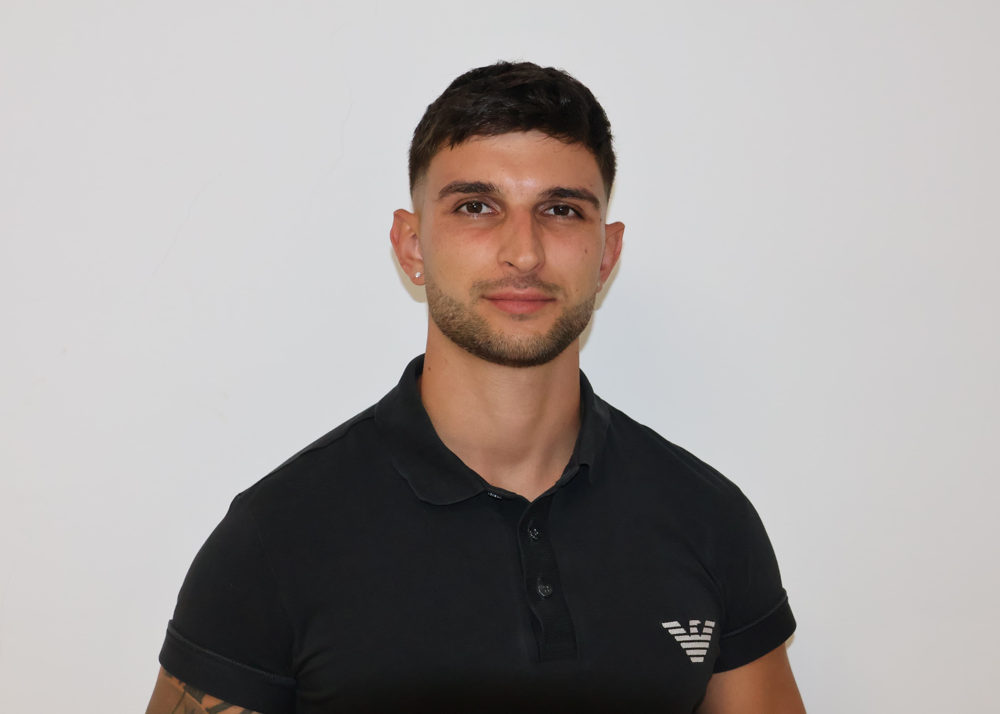

Hello, I am Rumen Orachev
Multiplatform and Web Applications Developer



Multiplatform and Web Applications Developer
Programming
Development
Cybersecurity
AWS
Networks
Projects
I'm Rumen Orachev, developer with training in Multiplatform and Web Applications and hands-on experience in real frontend and backend projects.
I'm expanding my knowledge in cloud computing (preparing for the AWS Solutions Architect – Associate certification).
Passionate about technology and software development, I'm looking to continue growing with projects that represent a challenge and an opportunity to learn.


In addition, I have certifications that demonstrate my ongoing commitment to learning in cybersecurity, cloud computing and networks. You can see them all verified on my Credly profile.
AWS

Cisco

Cisco

I developed web applications using Vue 3 and Laravel, creating reusable components and maintaining a clean architecture. I integrated REST APIs and managed data with MySQL. I built modern interfaces with HTML, CSS, JavaScript, and PHP, and improved overall performance by fixing bugs and enhancing code quality.
For 6 and a half years I gained experience with digital systems and troubleshooting in a demanding environment, which sparked my interest in technology and motivated me to train professionally in this field.
In addition to this website, I am also working on other projects. Here are some of them:
Rumen's Caffettiera is a responsive web application created with Django that simulates a modern cafe website. Includes a product section, functional contact form and administration panel. The project demonstrates the full Python/Django backend development and deployment in production.
GitHub Repository | Web Access
Step-by-step guided explanation on how to obtain and set up a digital certificate and make an electronic signature in Spain using an animated avatar as the main narrator. This video is part of a collaborative work carried out by Stanislav Muntyan, Arantxa Quijada, Javier Canudo and Rumen Orachev.
Complete design of a simulated computer network for a 75-person company, using Cisco Packet Tracer and narrated by an animated avatar.. Collaborative work by Stanislav Muntyan, Arantxa Quijada, Javier Canudo and Rumen Orachev.